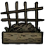

| “ | I will grow mighty crops here! | ” |
| –Wolfgang | ||
Specific crops can be grown by using Crop Seeds which take about 40 daylight hours to finish growing. This process can be accelerated by the use of Fertilizers (3 Guano, 4 Manure or 16 Rot/Rotten Eggs). After growing 20 crops (accelerated or not) the Basic Farm will be depleted and must itself be fertilized to continue being used. Both the Basic and Improved Farms cease to function in Winter, though during the first and last few days of Winter, fertilizer can still be used to grow the crops. Crops will also grow twice as fast when the world goes above 28 degrees. It can be destroyed by a hammer or a deconstruction staff. [Need Clarification]
The Improved Farm is an enhanced version of the basic Farm. It requires an Alchemy Engine and takes 10 Grass, 6 Manure, and 4 Rocks to build. Once built, Seeds can be planted in Improved Farms, which grow into a vegetable or fruit at random.
Specific crops can be grown by using Crop Seeds. It takes about 20 daylight hours to grow one, although this can be accelerated by the use of Fertilizers. The amount of fertilizer needed to fully grow a newly planted crop is either 2 Manure, 2 Guano or 8 Rot/Rotten Eggs. After growing 30 crops, (accelerated or not) the Improved Farm will be depleted and must itself be fertilized to continue being used.
  | ×8 |
 | ×4 |  | ×4 |  |
| ×10 |
| ×6 |  | ×4 |  |
")


{kind=link}
{kind=link}
{kind=link}
{kind=link}
{kind=link}
{kind=link}